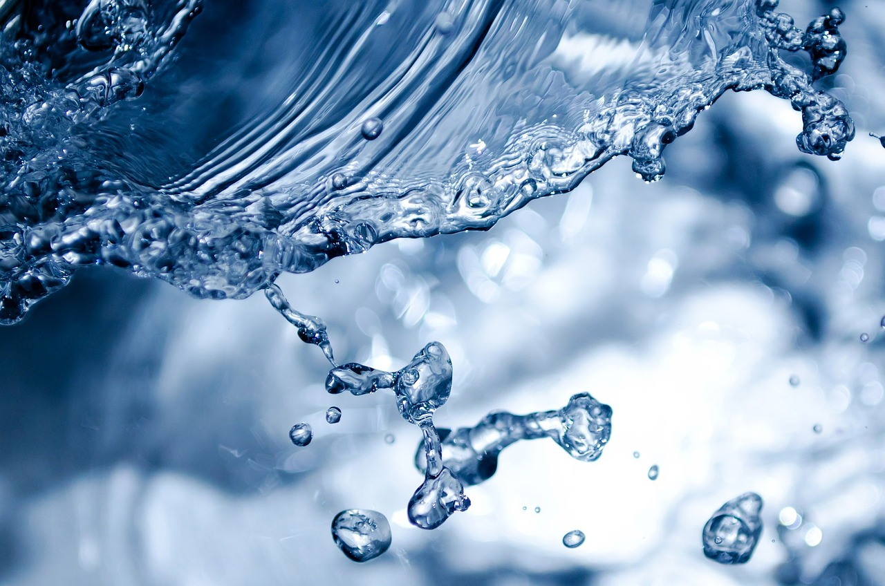

A tool to participate in favor of Conservation
Access information, tools and engage with stakeholders (organizations and individuals) leveraging your existing technologies and data to achieve the ambitious goal of understanding the importance of local ecosystems and protecting at least 30% of the surface (land and sea) for 2030.
Engage with the community and achieve new knowledge about nature and ecosystems through Geographic Information Systems (GIS).
Your next adventure begins here. Start exploring now!
Actions that stop the loss of natural resources in Thunder Bay.
To learn about Thunder Bay's progress in the fight against global warming,
a website is proposed to be developed. The website will allow researchers,
government entities, the private sector, and anyone in the community
to consult the status of the city's sustainability issues.
The "Sustainability in Small Actions" website seeks to share and promote
the protection of both marine and terrestrial areas of the Thunder Bay region
by 2030.

Our Community
EO Wilson Biodiversity Foundation y The Half-Earth
A commitment to conserve half of the land and sea to help safeguard most biodiversity, including ourselves.
We are river, because we are 70% water
Soy RÃo is an initiative that was born as a collaborative, to connect conscious communities with good environmental practices.
Created by: Adriana Angarita Director of the Rhapsodia Corporation, Oscar Bautista Lawyer | Cultural Manager | Creative

Biodiversidad para todos
This community seeks to increase the contribution of the business sector to knowledge of biodiversity; convening, facilitating and integrating their participation as a productive sector.
Sustainable development goals
Contribution to the 2030 agenda and SDGs
Explore each of the objectives and learn how the Government of Canada, through programs and policies, contributes to the advancement of the 2030 Agenda.
Allies
The companies and people who collaborate by taking action to advance the implementation of the United Nations 2030 Agenda for Sustainable Development